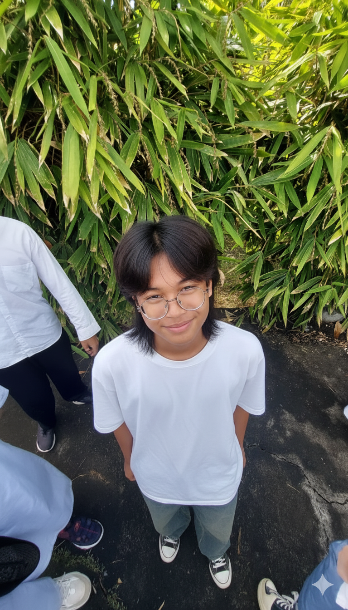

Biodata Lengkap Santri

Ryatsah Fatih Al-Muntazhar
Kelas: X IT-B
Tempat/Tanggal Lahir: Tangerang Selatan, 9 Juni 2010
Alamat Asal: Perum. SVR Blok D.12
Pencapaian Hafalan: 15 Juz
Riwayat Pendidikan Sebelumnya: Ma'had Imam Asy Syafi'i Al Atsary
Motto Hidup: Hidup dan matiku hanya untuk Allah.
Keahlian & Minat
- Khat Arab (Kaligrafi)
- Futsal dan Basket
- Gambar